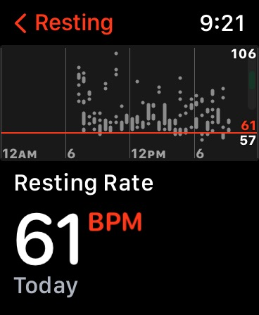
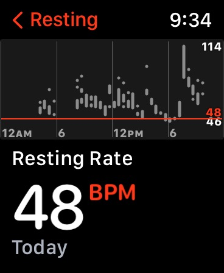

September 2022
PSA
Apple homepage today
Today's Apple homepage commemorates Queen Elizabeth II who passed away today:
Apple event news
Yesterday, on Sept 7, Apple held their annual September event. You can watch the whole thing below. It's about 90 minutes long but it's chapterized with a TOC, so you can skip around as you prefer.
Apple announced new Watch models, a new generation of the AirPod Pro model, and the new iPhone 14 models.
Here is a summary of all the announcements in 11 minutes:
new Apple Watch
Apple introduced the Watch Series 8, the updated SE, and the much rumored new Ultra.
The Series 8 introduces a new temperature sensor (temp taken every 0.1 seconds), has new accelerometers for crash detection and notifications, and lower power mode (up to 36 hrs of battery life). There is also a Nike version and a special Hermes edition.
Here is the new Series 8.
The new SE model has a faster processor than the predecessor, additional sensors, and starts at $249.
The new Ultra is primarily targeted to those who do a lot of outdoors activities or anyone who aspires to have a rugged and more capable watch.
The Ultra has dual frequency GPS, a titanium case that is 49 mm in size, a 36-hour battery life which can be extended to 60 hours in lower power mode, a siren, larger/better speakers, and much more.
Here is Apple's intro to the Ultra:
Here is the Watch Comparison page, by Apple.
Some of the Watch Ultra top features.
All watches can be ordered today.
AirPod Pro
The 2nd gen of AirPod Pro is here.
Here is a summary of all AirPod choices and prices. zoo
new iPhones
Apple announced the new iPhone lineup. There are 4 new iPhone 14 models, plus the new SE. Plus, Apple is continuing to offer the iPhone 13. Here is the lineup.
In a nutshell: The iPhone 14 has the 6.1'' screen, the Plus is the same but with a 6.7'' screen and longer battery life, the Pro has many `pro' features and 6.1'' screen, and finally, the Pro Max has the larger screen and longer battery life.
Joanna Stern of the WSJ gives a nice brief overview of the iPhones right after yesterday's event:
All 4 flavors of iPhone 14 offer the new Emergency SOS via satellite feature:
Apple has released a video intro to iPhone 14 Pro:
Apple has released a video Guided Tour of iPhone 14 and 14 Pro:
Here are the iPhone 14 specs all together for comparisons.
Here are the iPhone 14 Pro specs all together for comparisons.
How Dynamic Island works on the iPhone 14 Pro.
Here is the customizable iPhone Comparison page by Apple.
You can order the new iPhones starting tomorrow, Friday, Sept 9, at 5 am Tucson (PT). However, you can actually set up your purchase on the Apple Store app and have it ready to place the order with just one click, any time after 5 am tomorrow. This means you can go through the purchasing options in advance and save them: the carrier verification, any trade-in, the payment option of your choice, etc. This avoids delays and snafus when everyone is trying to place an order at the same time.
Apple helps Android users switch to an iPhone.
Are you confused by the different order dates for different products? Here they are, all summarized.
Selling or trading in
If you are considering selling or trading in your older models, remember you have several options.
You can sell via Swappa.com or other similar marketplaces. You will typically get more for your device but you are on your own to list the item and make the sale.
You can trade in your device with Apple. Here are the values offered by Apple.
iOS 16 and watchOS 9
iOS 16, watchOS 9, and iPadOS 16.x have been in beta since June.
Apple announced that iOS 16 and watchOS 9 will be released Monday, Sept 12. See the list of compatible devices. iPadOS 16.1 will be released later.
other Apple news
Code Conference is taking place this week. Kara Swisher, who co-founded this conference, held a panel discussion interview with Tim Cook, Laurene Powell Jobs, and Jonny Ive. The topic was Steve Jobs and his influence on technology and culture.
Swisher asked the panel abut how Steve Jobs would react to today's state of world affairs. Each of the 3 panelists responded, reports Macrumors.
iOS apps
KeepBP is an app that helps you track your blood pressure readings: the systolic, the diastolic, and your pulse. This is useful if you want to see trends over time. You can also use it to generate and download a report summary. The app is free.
Your Weight in Gold converts how much you would be worth in gold, based on your weight ;-) The app is free and does not have ads, and does not track you.
Roger S. told us about a very useful Siri Shortcut created by Shane Whatley. You can `set up an automation that will send a text message to family when no motion has been detected in the house all day. This is a great way keep an eye on your elderly family members or friends that are living alone. Stick around to the end for some bonus safety tips!' Shane has made it available to everyone for download. Take a look:
We all know that drinking water is very important. Otherwise you could get a kidney stone, in the middle of a hot Arizona summer, Olga reports! Consider using Pee & See, an iOS app that helps you track the frequency of your output. It can give you prompts to drink more water. Olga recommends this app, it's both useful and fun. The notifications have the sound of running water and the notices have funny puns.
Stone Pass is a free app that provides you with very useful data on the likelihood that you will pass a kidney stone on your own. It is developed by Dr. Portis, a board certified urologist, and it uses aggregate data from verified patient reports.
podcasts
isten to A Simply Genius Tomato Sauce podcast episode. It's a brief 13-minute fun chat with a sous chef about making a simple tomato sauce. Here is the write-up: 5-Minute Tomato Sauce Recipe Has a Secret Star.
gadgets & accessories
Roger S. points us to Shane Whatley's recent video on his home network set up: he has a network rack to organize all of his smart home hubs and devices. (Roger says it's a bit intimidating but also great):
If you are considering smart doorbells, there are 2 excellent 3rd party choices listed on Apple.com: one by Wemo and one by Logitech.
Here is the Wemo Smart Video Doorbell.
Olga reported that she recently bought the Wemo and she has been very happy with it. She also considered the Logitech model but decided to go with Wemo because it has a higher max temperature rating.
Here is Shane's Wemo review, with comparisons to Logitech:
Here is Shane Whatley's review of the Logitech doorbell:
Pay
Olga shared her experience with how Apple Card handled an apparently fraudulent charge. (Apparently at a Walgreen's in Arkansas, while she was in Tucson.) She received a notification that the charge ws declined, she reviewed it and confirmed it was not hers. She also called Apple Card support, discussed the matter, and received a replacement card within just a few days. This was carried out fast and very well.
watch
Mountain Biker's Apple Watch Helped Save His Life After Crash Left Him Paralyzed, reports People Magazine. He was biking through a San Diego County hill when he fell and broke vertebrae in his neck. 'Nobody Knew Where I Was,' he said.
Apple Watch can show your heart rate throughout the day. Olga shared a view of a day after she got a kidney stone, and even after the pain subsided:

Here is a view of a typical day before she got her kidney stone:

privacy & security
Apple announced a `groundbreaking security capability that offers specialized additional protection to users who may be at risk of highly targeted cyberattacks from private companies developing state-sponsored mercenary spyware.' However, anyone can use this feature. Apple today detailed two initiatives to help protect users: Lockdown Mode (coming with iOS 16) and $10 million cybersecurity grant it announced last November to support civil society organizations that conduct mercenary spyware threat research and advocacy.'
`Lockdown Mode blocks many message attachment types, disables link previews, turns off certain web browsing technology by default, blocks invitations and FaceTime calls', and more reports The Verge in their overview.
next iPUG meeting
Our next iPUG meeting will be on Tuesday, October 4, at 7 pm.